【スイッチスポーツリゾート】アーチェリー隠し的12個の当て方まとめ
結論：アーチェリーの隠し的は4ステージ×3個の全12個。どれも「景色の中の目印に照準を合わせて、風の分だけずらす」で当たります。リンゴ・ハンバーガー・ピニャータ・プリン・メロン・トースターと、的のすぐ近くではなく景色の中に置いてあるので、知らないと一生気づかないものもあります。実際に全部当てたやまむーが、どこを目印にしたのかを画像つきでまとめました（画像の赤丸が目印の場所です）。
1. 隠し的12個の一覧と難しさ
難しさは、やまむーが実際に何回も撃ってみた体感です。まずは★1の4つから狙うと、コツがつかみやすいです。
| ステージ | 隠し的 | 目印 | 難しさ |
|---|---|---|---|
| 広場 | リンゴ | 山と山の間 | ★★ |
| 広場 | ピニャータ | 電柱（街灯の柱） | ★★ |
| 広場 | ハンバーガー | 赤レンガの三角屋根 | ★ |
| 砂浜 | プリン | 雲のちょっと上 | ★ |
| 砂浜 | リンゴ | 2つの風車の間 | ★★★ |
| 砂浜 | メロン | 岩の角と角の間 | ★★ |
| 草原 | ハンバーガー | スタジアムの屋根の端 | ★ |
| 草原 | メロン | 岩の角張った部分 | ★★★ |
| 草原 | ハンバーガー | 2本のヤシの木 | ★（最簡単） |
| 山岳 | プリン | 3つ目の木と空の色の段 | ★★ |
| 山岳 | ピニャータ | 洞窟の天井 | ★★★★（最難関） |
| 山岳 | トースター | トースターの下の線・道の白い線 | ★★ |
2. 当て方の基本（照準と風）
- 照準の円を一番小さくしてから狙う——円の真ん中や下のラインを目印に重ねると、毎回同じ位置で撃てます
- 風は「吹いてくる向きと逆」にずらす——右から吹いていたら左へ、左からなら右へ。広場は無風、砂浜から1〜4m、草原・山岳では4〜5m吹きます
- まず目印に合わせる→そこから少しだけ動かす——いきなり的を狙うより、決まった目印から微調整する方が再現しやすいです
3. 広場ステージの隠し的
最初のステージは風がないので、目印さえ覚えればそのまま当たります。
リンゴ（距離15m）
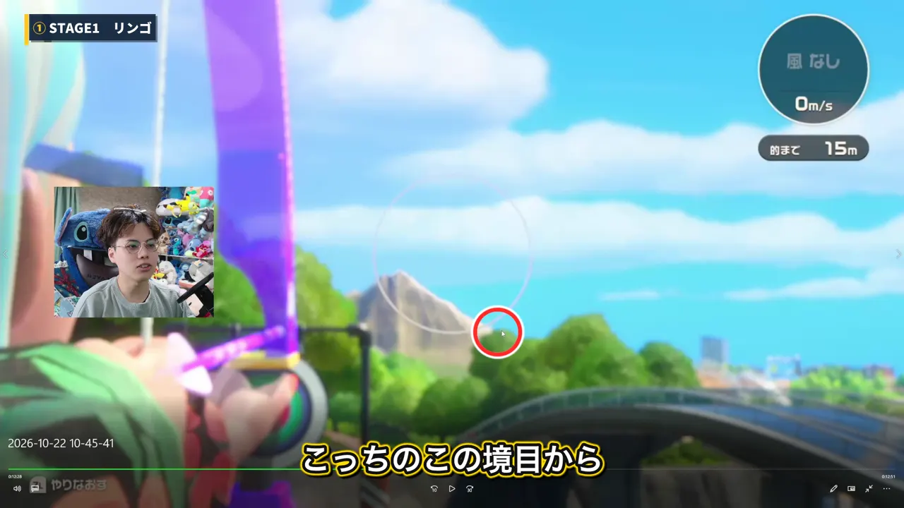
奥に見える山と山の間に照準を合わせて、ちょっと左にずらすのが基本。山の頂点と右側の境目の間あたりで撃つと当たります。最後は微調整が必要で、正直ちょっと難しいです。
ピニャータ（距離18m）
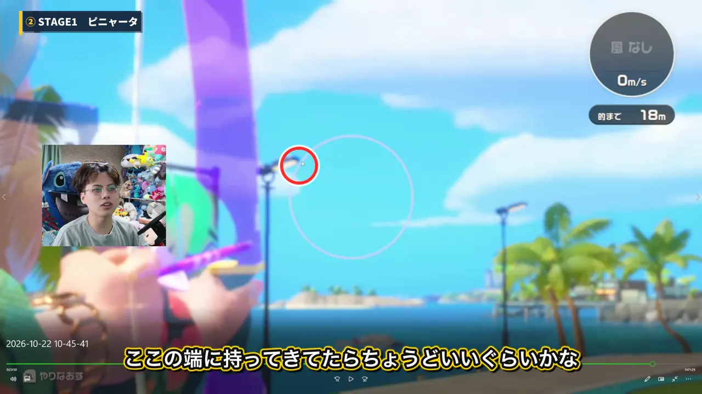
電柱（街灯の柱）を目印にして、柱のギリギリのところに照準の端を持ってきます。やまむーはギリギリの判定で当たったので、そこからもう少しだけ下げると真ん中に当たりそうです。
ハンバーガー（距離20m）
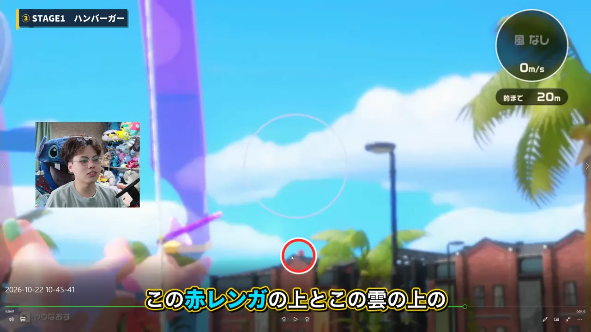
ハンバーガー自体を真ん中にするとズレます。赤レンガの建物の三角屋根が照準の真ん中に来るようにして、少し上に持っていくのがコツ。照準を一番小さくして、円の一番下の線が「赤レンガの上と雲の上の真ん中」あたりに来るように撃つと、ど真ん中に当たりました。
4. 砂浜ステージの隠し的
このステージから風が吹き始めます（1m〜4m程度）。目印に合わせてから、風の分だけ横にずらしましょう。
プリン（距離20m）
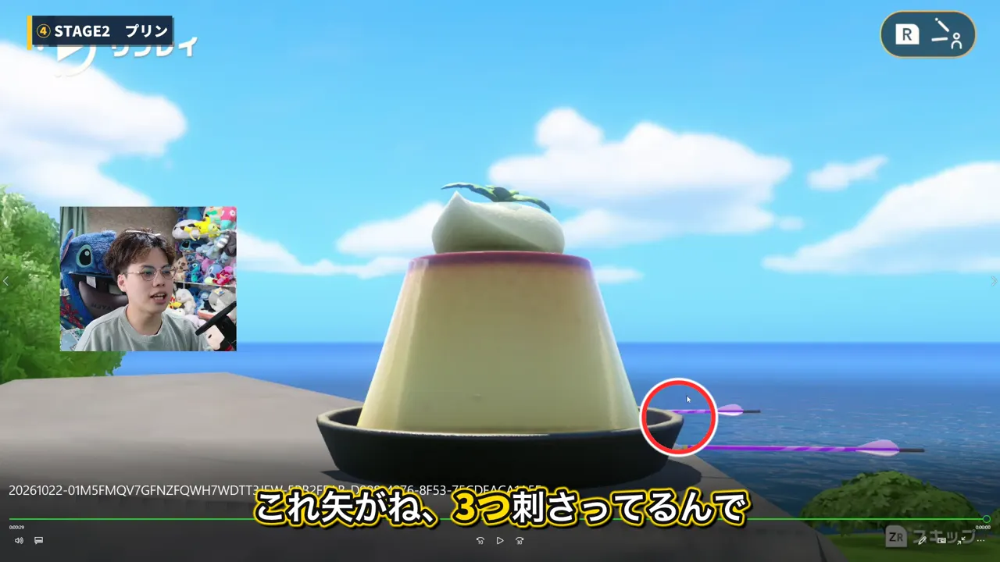
めちゃくちゃ簡単です。雲のほんのちょっと上に照準を合わせて、まっすぐ上に。あとは風の分だけ左右にずらすだけで当たります。
リンゴ（距離23m）
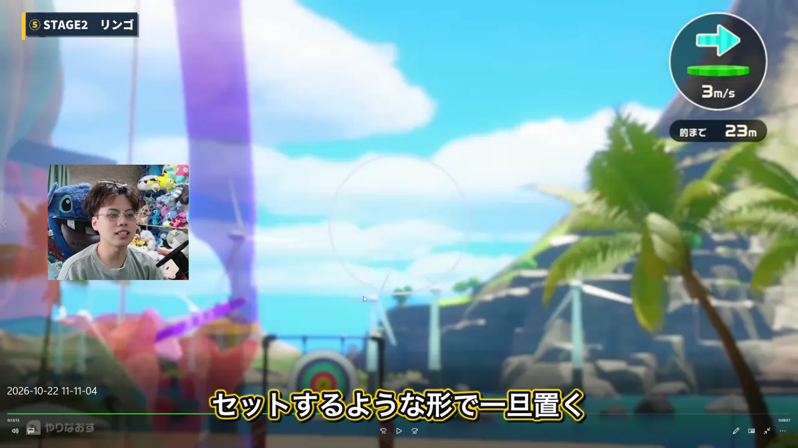
かなり難しかった1個です。奥に見える2つの風車の間に照準を一旦置いて、そこから少し上に上げる。風が3mなら同じ位置で当たります。やまむーの体感では左風の方が狙いやすく、右風だと目印が見つけにくいです。
メロン（距離27m）
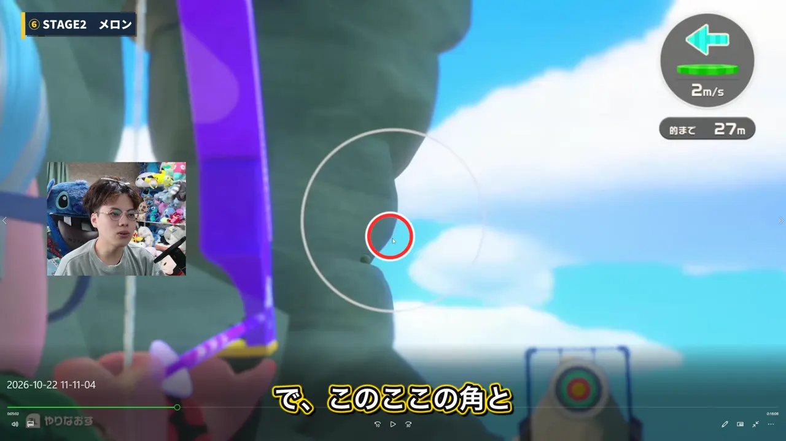
左の岩をよく見ると、出っ張った角がいくつか並んでいます。その角と角の間を目印にして、高さは下から6〜7割くらい（3個目の角でもOK）。あとは風の分だけ左右にずらします。風は2〜4mで、弱い時はほとんど影響を受けません。
5. 草原ステージの隠し的
風が4〜5mまで強くなります。このステージには、全12個の中で一番簡単な隠し的があります。
ハンバーガー①（距離27m）
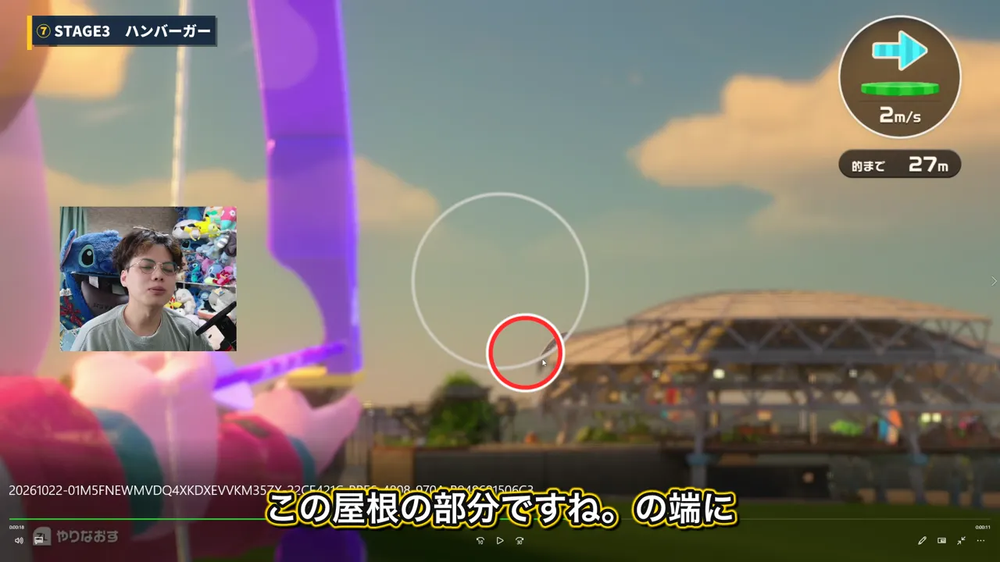
左側にあるハンバーガーは、スタジアムの屋根の端に照準を合わせて、風の分だけずらすだけ。距離もそれほど遠くないので、比較的簡単です。
メロン（距離30m）
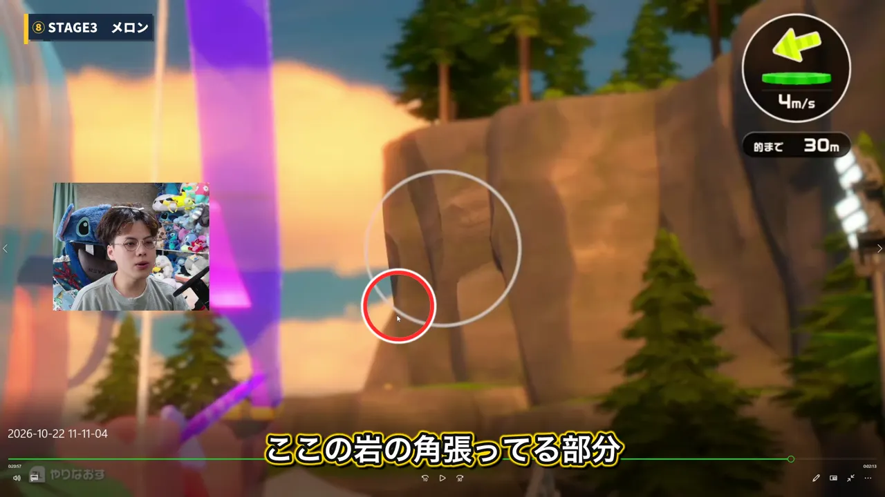
岩のカクっと角張っている部分に照準を一旦合わせて、そこから少し下に持っていきます。4mの風ならそのまま、5mならもう少しずらします。明確な基準がない分、惜しい所に行きやすい1個です。
ハンバーガー②（距離35m）★一番簡単

全12個で一番簡単です。右風のときは、2本のヤシの木を照準の真ん中に入れて、ちょっとだけ右下にずらす。これだけで当たります。左風の場合は少し難しくなるので、右風のタイミングで狙うのがおすすめです。
6. 山岳ステージの隠し的
最後のステージは夜・洞窟・溶岩と景色が暗く、風は右から5mのことが多いです。
プリン（距離35m）
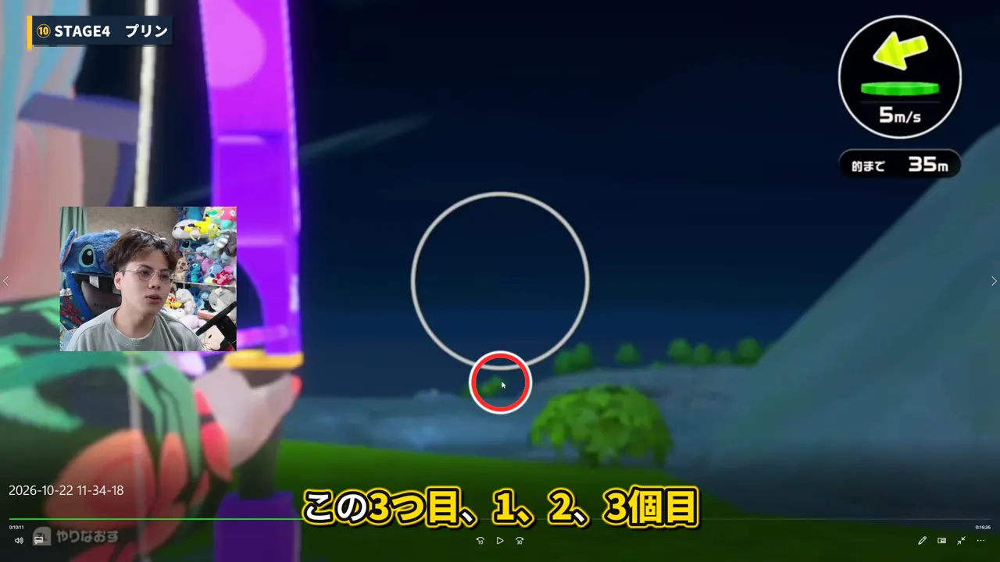
照準を一番小さくして、手前から数えて3つ目の木の真ん中に照準の真ん中を合わせ、そのまま上へ持っていきます（右から5mの風の場合）。夜空をよく見ると空の色が段々になっていて、その3段目あたり（2段目からほんの少し上）で撃つとジャストです。動画だと見えにくいですが、実際のゲーム画面だと分かります。
ピニャータ（距離40m）★一番難しい
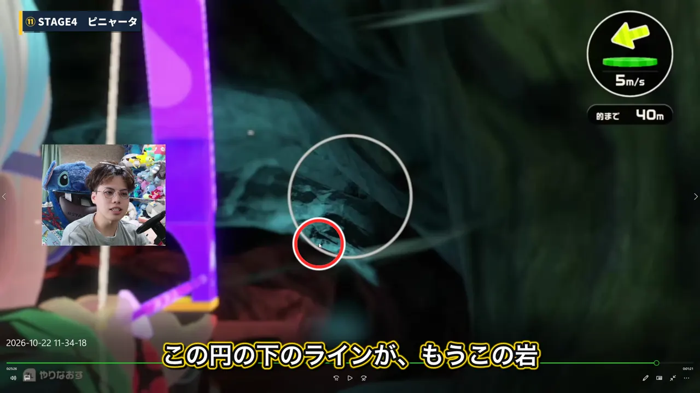
やまむーが一番苦戦した1個です。風は右から5mでほぼ固定なのに、はっきりした目印がありません。照準の円の下のラインを洞窟の天井に沿わせて、そこからほんの少しだけ下にずらす（天井との間にちょっとだけ隙間が空くくらい）のが目安です。止めるのが難しいので、何回か挑戦するつもりで。
トースター（距離45m）
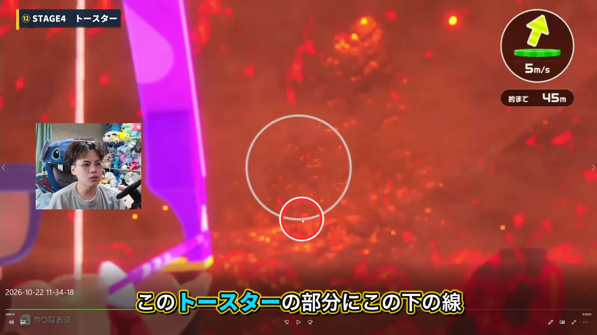
このステージの風は右向き・しかも上向きに吹いているので、矢があまり落ちません。照準の下の線をトースターにぴったり密着させ、風と逆の左に少しずらすのが正解。道（白い線）のギリギリに合わせるくらい、少し下めでもOKです。
よくある質問
Q. 隠し的はいくつある？
4ステージに3個ずつ、合計12個です。リンゴ・ハンバーガー・ピニャータ・プリン・メロン・トースターがあります。
Q. 一番簡単なのはどれ？
草原ステージのハンバーガー②です。右風なら、2本のヤシの木を真ん中に入れて右下にずらすだけです。
Q. 一番難しいのはどれ？
山岳ステージ・洞窟のピニャータです。円の下のラインを洞窟の天井に沿わせて、ほんの少し下を狙います。
Q. 風が強い時はどうする？
まず目印に合わせてから、風が吹いてくる向きと逆に少しずらします。目印の位置を毎回同じにすると、ずらす量だけに集中できます。